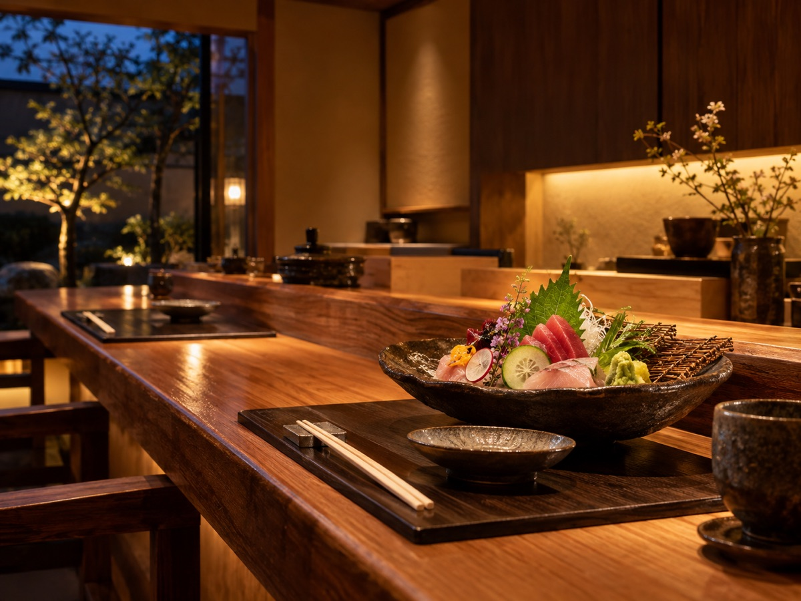

飲食
和食処 やまの葉 様
季節の味わいと、お店の魅力が伝わるサイトに。

| 顧客名 | 和食処 やまの葉 |
|---|---|
| 制作年 | 2026年 |
| 担当範囲 | 企画・デザイン・WordPress構築 |
制作の概要
地元の旬の食材を使ったお料理と、落ち着いた和の空間が伝わるよう、写真を中心にしたシンプルで上質なデザインで制作しました。
季節のメニューやお知らせを、お店の方ご自身で簡単に更新できるようWordPressを導入し、運用のしやすさにも配慮しています。
取り組んだこと
お料理の写真を生かした、落ち着きのあるデザイン。
お店で更新しやすい、お知らせとメニューの構成。